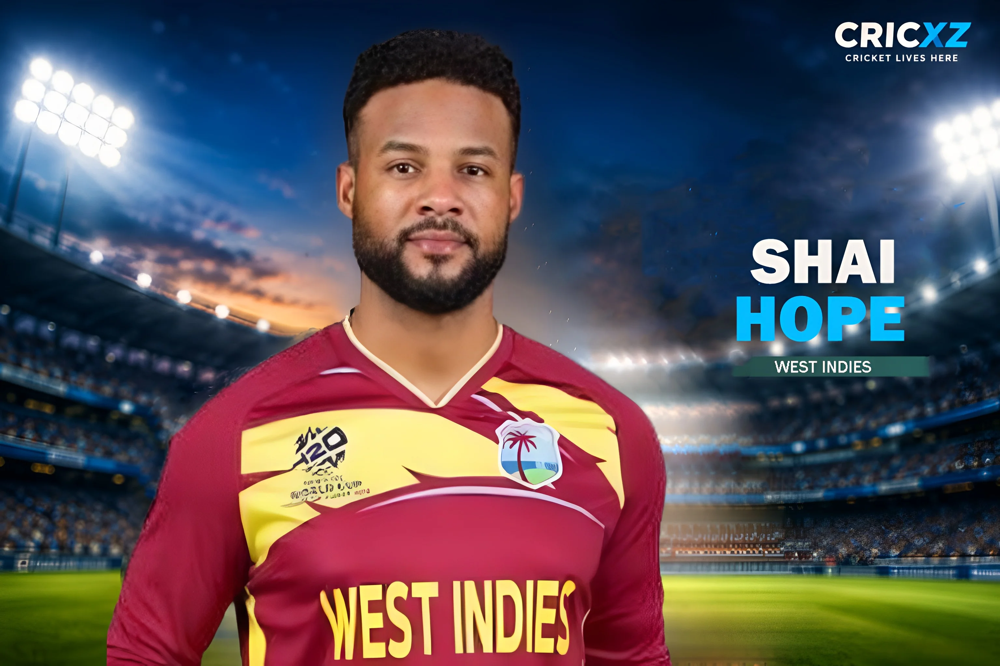

ODI (Updated)
- Matches
- 158
- Runs
- 6,428
- Highest score
- 170
- Batting average
- 50.22
- Strike rate
- 80.25
- Hundreds
- 20
- Fifties
- 32
- Fours
- 505
- Sixes
- 130

An anchor in the modern game, Shai Hope has been the cornerstone of the West Indies batting lineup. Maintaining an ODI average above 50, he is widely regarded as one of the best 50-over batters of his generation.
In the bilateral ODI series clash against India in Guwahati, Shai Hope scored a magnificent 104 runs. Despite the match resulting in a defeat for the West Indies, this knock marked his monumental 20th ODI century, proving his immense value as the ultimate anchor of the side.
Statistics updated: 2 October 2026 (Includes ODI vs India on Sep 30, 2026)
Primary career statistics source: Official ICC Rankings & Records
Shai Hope has been the silver lining for West Indies cricket over the past decade. Breaking into the team in 2015, he announced himself globally when he became the first batter ever to score a century in both innings of a first-class match at Headingley, orchestrating a historic Test win over England in 2017.
However, it is his ODI record that truly sets him apart. Hope possesses an incredible ability to accumulate runs and anchor the innings, boasting a career ODI average that continuously hovers above 50. With 20 centuries in just 157 matches, he is firmly established as one of the fastest batters to reach multiple run milestones in One Day Internationals.
His game has significantly evolved; once criticized for a lower strike rate, Hope has successfully integrated calculated aggression into his T20 game, leading the West Indies in white-ball cricket with immense responsibility.
1 May 2015
Against England at Bridgetown, Barbados.
16 November 2016
Against Sri Lanka at Harare Sports Club.
29 December 2017
Against New Zealand at Saxton Oval, Nelson.
First and only player to hit centuries in both innings (147 & 118*) of a first-class match at Headingley, Leeds.
Maintains an elite ODI batting average of 50.22, ranking among the best openers globally.
Named in the ICC Men's ODI Team of the Year on multiple occasions (including 2020 and 2022).
Hope is the first cricketer in history to score hundreds against all 11 Full Member nations in international cricket.